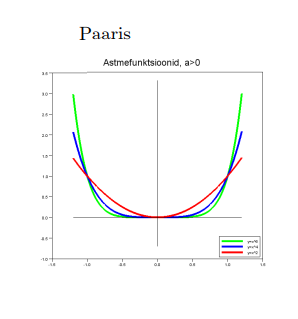
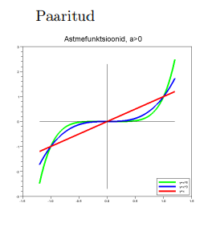
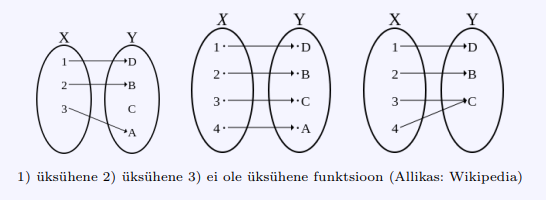
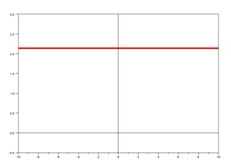
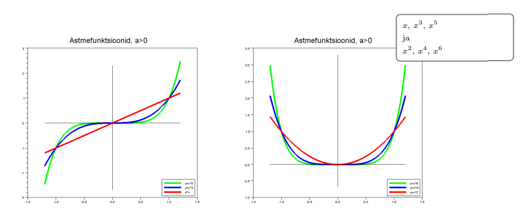
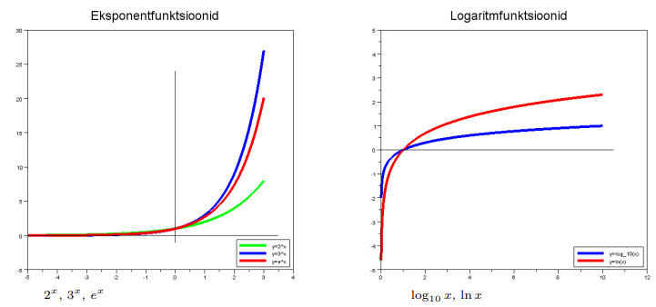
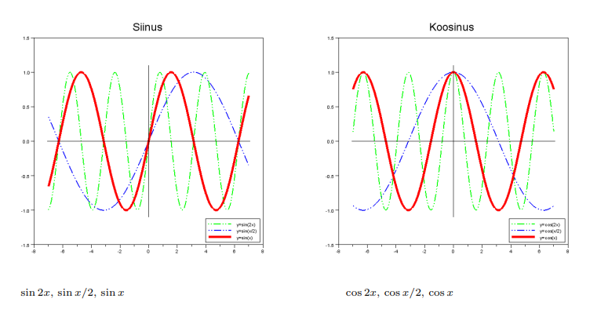
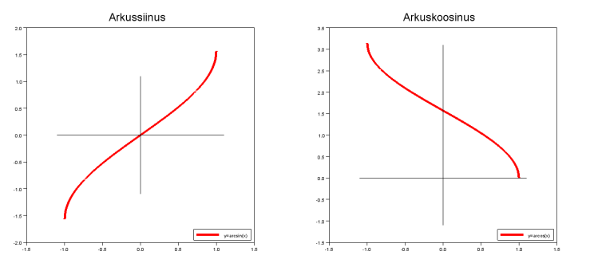

Funktsiooni
y = f(x) nimetatakse
paarisfunktsiooniks määramispiirkonnas
X, kui
f(-x) = f(x), iga
x ∈ X korral.

Funktsiooni
y = f(x) nimetatakse
paarituks funktsiooniks, kui
f(-x) = -f(x), iga
x ∈ X korral.

tatakse üksüheseks funktsiooniks, kui
iga x1, x2 ∈ X , x1 ̸= x2, korral ka funktsiooni väärtused on erinevad Funktsiooni f : X → Y nime
hulgas Y, s.t
f(x1) ̸= f(x2).

Funktsioonide f ja g liitfunktsioo,niks ehk kompositsiooniks nimetatakse funktsiooni h : X → Z, mis defineeritakse võrdusega
h(x) = g( f(x) ), x ∈ X
Kasutatakse kirjutisi h = gf või h = g ◦ f
Vaatleme funktsioone
f : R → R, f(x) = x + 1
g : R → R, g(x) = x2
Siis saame moodustada liitfunktsioonid
(gf)(x) = g(f(x)) = (x + 1)2 = x2 + 2x + 1
(fg)(x) = f(g(x)) = g(x) + 1 = x2 + 1
Üksühese vastavuse f : X → Y pöördfunktsioon f-1
: Y → X määratakse võrdusega
f-1(y) = x
kus f(x) = y iga x ∈ X korral.
Põhiliste elementaarfunktsioonide all mõistetakse järgmisi funktsioone:
1. konstantne funktsioon y = c
2. astmefunktsioon y = xa
3. eksponentfunktsioon y = ax, (a > 0, a ̸= 1)
4. logaritmfunktsioon y = logax,(a > 0, a ̸= 1)
5. trigonomeetrilised funktsioonid
y = sin x, y = cos x, y = tan x, y = cot x
6. arkusfunktsioonid
y = arcsin x, y = arccos x, y = arctan x, y = arccot x
Konstantne funktsioon

astmefunktsioon

Eksponent- ja logaritmfunktsioon

Trigonomeetrilised funktsioonid

arkusfunktsioonid
